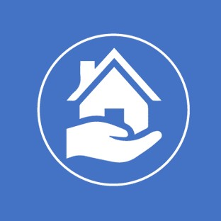

<ion-app>
  <ion-split-pane contentId="main-content">
    <ion-menu contentId="main-content" type="overlay">
      <ion-content>
        <ion-list id="inbox-list">
          
          <ion-list-header>Bienvenido</ion-list-header>
          <ion-note>Servicio Justo</ion-note>

          <ion-menu-toggle auto-hide="false" *ngFor="let p of appPages; let i = index" >
            <ion-item (click)="selectedIndex = i" routerDirection="root" [routerLink]="[p.url]" lines="none" detail="false" [class.selected]="selectedIndex == i">
              <ion-icon slot="start" [ios]="p.icon + '-outline'" [md]="p.icon + '-sharp'"></ion-icon>
              <ion-label>{{ p.title }}</ion-label>
            </ion-item>
          </ion-menu-toggle>
          <ion-menu-toggle>
            <ion-item (click)="cerrarSesion()" routerDirection="root" lines="none" detail="false">
              <ion-icon slot="start" [ios]="'warning-outline'" [md]="'warning-sharp'"></ion-icon>
              <ion-label>Cerrar sesión</ion-label>
            </ion-item>
          </ion-menu-toggle>
          
        </ion-list>

        
      </ion-content>
    </ion-menu>
    <ion-router-outlet id="main-content"></ion-router-outlet>
  </ion-split-pane>
</ion-app>
